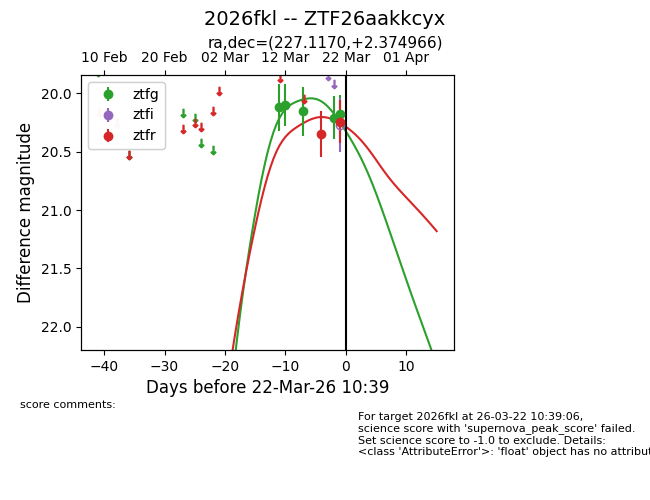
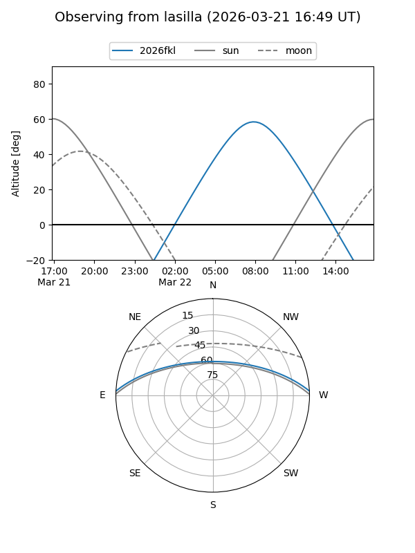
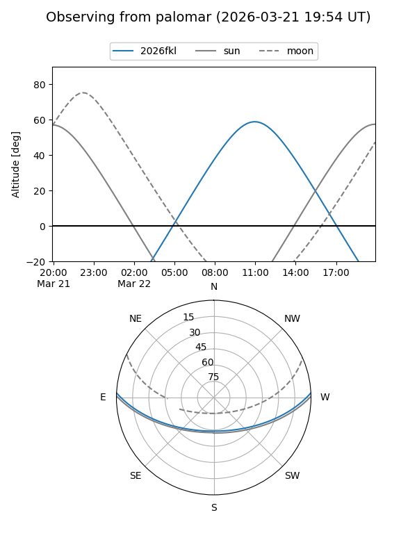
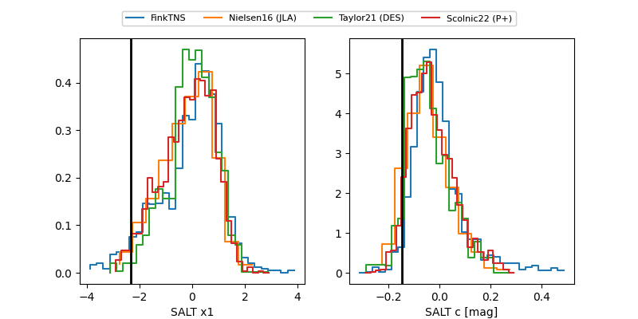

2026fkl
Target 2026fkl at 2026-03-22 10:41
Aliases and brokers:
FINK: link
Lasair: link
ALeRCE: link
TNS: link
YSE: link
alt names
ZTF26aakkcyx (ztf,fink_ztf)
2026fkl (tns,yse)
Coordinates:
equatorial (ra, dec) = 227.1170,+2.37497
equatorial (HMS+DMS) = 15:08:28.09,+02:22:29.88
galactic (l, b) = (1.8025,+48.92521)
Flags:
Photometry:
last ztfg=20.18, ztfr=20.24
5 ztfg, 2 ztfr detections
Lightcurve

Visibility


Additional plots
